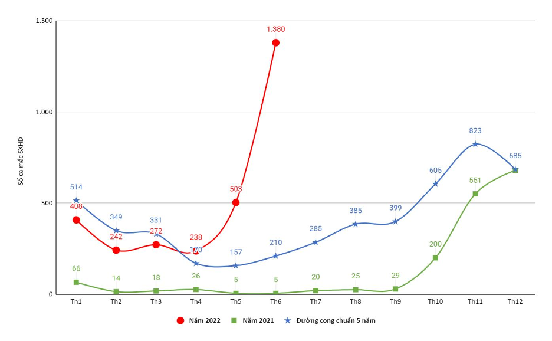

-
Trong những năm gần đây, bệnh sốt xuất huyết đang gia tăng tại nhiều
quốc gia nhiệt đới, đặc biệt là Việt Nam. Theo Bộ Y tế, khoảng
60–70% số ca mắc xuất hiện vào mùa mưa do điều kiện thuận lợi cho
muỗi sinh sản. Trẻ em và thanh thiếu niên chiếm khoảng 50–60% số ca
nhập viện, cho thấy nhóm tuổi này có nguy cơ cao.
390 Triệu
Người nhiễm mỗi năm
40%
Dân số toàn cầu có nguy cơ
4 Chủng
Loại virus dengue